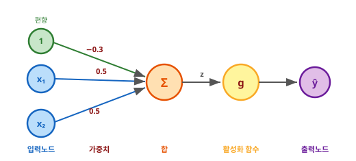
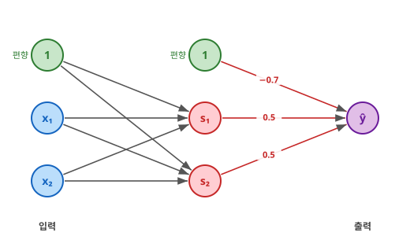
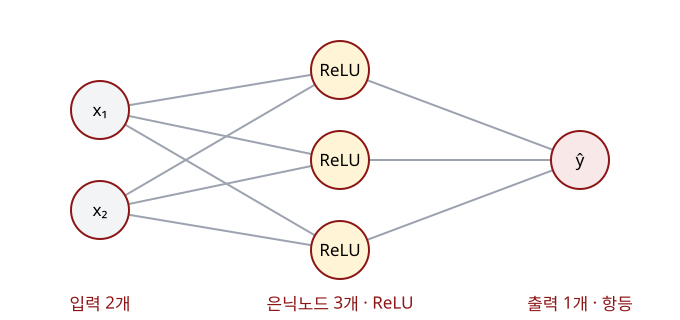

import torch
X = torch.tensor([[0., 0.],
[1., 0.],
[0., 1.],
[1., 1.]])
print(X)tensor([[0., 0.],
[1., 0.],
[0., 1.],
[1., 1.]])오늘의 목표는 교재의 신경망 그림을 보고 층을 만들고, 입력을 넣어 출력을 계산하는 것이다. 퍼셉트론 하나부터 XOR 신경망까지 함께 구현한 뒤, 마지막에는 새로운 그림을 보고 직접 모델을 작성한다.
대응 이론: Ch02 퍼셉트론과 다층 퍼셉트론. 지난주에 사용한 텐서는 오늘 신경망에 넣을 숫자를 담는 데 쓴다. 필요한 입력은 아래에 준비되어 있다.
Colab 기본 CPU 런타임에서 셀을 위에서부터 실행한다. 각 구간은 설명을 듣고, 코드를 실행하고, 그림과 출력을 함께 확인하는 시간을 포함한다. 가중치를 교재의 값으로 설정하는 셀은 제공 코드다. 그대로 실행하면 된다. 마지막 직접 해보기에는 작성 시간과 함께 풀이하는 시간이 포함되어 있다.
| 시간 | 내용 |
|---|---|
| 0–15분 | 입력을 준비하고 퍼셉트론의 가중합 계산 |
| 15–30분 | 같은 계산을 nn.Linear로 구현 |
| 30–40분 | 활성화 함수를 붙여 출력 확인 |
| 40–55분 | 교재의 XOR 그림을 코드로 구현 |
| 55–65분 | nn.Sequential로 신경망 구성 |
| 65–75분 | 그림을 보고 직접 작성·정리 |
이론의 첫 회귀 예제는 \(z=0.5x_1+0.5x_2-0.3\)이다. 그림에서 입력 두 개, 가중치 두 개, 편향 하나를 찾아본다.

입력이 \((1,0)\)이면 \(0.5\times1+0.5\times0-0.3=0.2\)다. 이 계산을 파이토치로 실행해 보자.
import torch는 파이토치 기능을 불러온다. torch.tensor(...)는 숫자 목록을 텐서로 만든다. 아래 X는 입력 네 건이다. 한 행은 데이터 한 건, 한 열은 입력 변수 하나다. 각 행에 \(x_1,x_2\)를 순서대로 적었다.
W에는 두 가중치, b에는 편향을 넣는다. @는 곱해서 더하는 행렬 곱이고, .T는 행과 열을 바꾼다. 아래 X @ W.T + b는 각 입력에 대해 교재의 \(0.5x_1+0.5x_2-0.3\)을 계산한다.
tensor([[-0.3000],
[ 0.2000],
[ 0.2000],
[ 0.7000]])| 입력 \((x_1,x_2)\) | 가중합 \(z\) |
|---|---|
| (0, 0) | -0.3 |
| (1, 0) | 0.2 |
| (0, 1) | 0.2 |
| (1, 1) | 0.7 |
출력의 네 값을 표와 대조한다. 회귀 예제에서는 항등 함수 \(g(z)=z\)를 사용하므로 가중합이 그대로 예측값이다.
nn.Linear로 구현하기 — 15분torch.nn은 신경망을 만드는 기능을 모은 모듈이다. as nn으로 짧은 이름을 붙인다. nn.Linear는 가중치를 곱해 더하고 편향을 더하는 층을 만든다.
nn.Linear(입력 개수, 출력 개수)그림에는 입력 \(x_1,x_2\) 두 개와 출력 \(z\) 하나가 있으므로 nn.Linear(2, 1)을 쓴다. 입력 개수는 한 데이터에 들어 있는 변수의 개수다.
x₁, x₂ → Linear(2, 1) → z
입력 2개 출력 1개layer = nn.Linear(2, 1)은 층을 만드는 코드이고, layer(X)는 그 층에 입력을 넣어 계산하는 코드다.
새 층의 가중치와 편향은 무작위로 정해진다. 교재의 답을 확인하기 위해 앞의 W, b를 넣는다. weight는 가중치, bias는 편향이며, copy_는 값을 복사한다. torch.no_grad()는 이 설정 과정의 기울기를 기록하지 않게 한다. 아래 셀은 그대로 실행한다.
tensor([[-0.3000],
[ 0.2000],
[ 0.2000],
[ 0.7000]], grad_fn=<AddmmBackward0>)앞에서 직접 계산한 -0.3, 0.2, 0.2, 0.7이 나온다. 입력 네 건 각각에 대해 출력 하나씩을 계산한 것이다.
| 교재의 계산 | 행렬 연산 | 파이토치 층 |
|---|---|---|
| \(0.5x_1+0.5x_2-0.3\) | X @ W.T + b |
layer(X) |
그림의 입력 두 개와 출력 하나를 코드의 2, 1에 연결해 보고, 입력을 넣어 계산하는 줄을 짚어 본다.
퍼셉트론은 가중합 계산 → 활성화 함수 적용 순서로 계산한다. 앞에서 구한 z에 교재의 활성화 함수를 적용한다.
계단 함수는 값이 0 이상이면 1, 아니면 0을 반환한다. 아래처럼 step 함수로 정의해서 사용한다. .float()는 참·거짓을 실수 1과 0으로 바꾼다.
tensor([[0.],
[1.],
[1.],
[1.]])출력은 0, 1, 1, 1이다. 교재의 OR 퍼셉트론과 같다.
nn.Sigmoid()와 nn.ReLU()는 활성화 부품을 만든다. 층을 사용할 때처럼 부품을 먼저 만들고, 괄호 안에 값을 넣어 실행한다.
tensor([[0.4256],
[0.5498],
[0.5498],
[0.6682]], grad_fn=<SigmoidBackward0>)
tensor([[0.0000],
[0.2000],
[0.2000],
[0.7000]], grad_fn=<ReluBackward0>)| 가중합 \(z\) | Sigmoid: 0과 1 사이로 변환 | ReLU: 음수를 0으로 변환 |
|---|---|---|
| -0.3 | 약 0.426 | 0 |
| 0.2 | 약 0.550 | 0.2 |
| 0.2 | 약 0.550 | 0.2 |
| 0.7 | 약 0.668 | 0.7 |
출력을 표와 함께 확인한다. layer(X)가 그림의 가중합 부분, step(z)나 relu(z)가 활성화 부분에 해당한다.
이론에서는 OR과 NAND를 계산하는 두 퍼셉트론의 출력을, AND를 계산하는 다음 퍼셉트론에 넣었다. 이번에도 동일한 네 입력 X를 사용한다.

그림의 \(s_1,s_2\)가 은닉층의 두 출력이고, 이 두 값이 다음 출력층의 입력이 된다.
| 노드 | 가중치 | 편향 | 활성화 |
|---|---|---|---|
| 은닉 \(s_1\): OR | 0.5, 0.5 | -0.3 | 계단 |
| 은닉 \(s_2\): NAND | -0.5, -0.5 | 0.7 | 계단 |
| 출력: AND | 0.5, 0.5 | -0.7 | 계단 |
nn.Linear(2, 2)인가?앞의 nn.Linear(2, 1)은 두 입력으로 가중합 하나를 만들었다. XOR의 은닉층에서는 같은 \(x_1,x_2\)를 받는 퍼셉트론 두 개가 필요하다. 따라서 입력은 여전히 2개이고 출력은 2개다.
┌→ z₁ = 0.5x₁ + 0.5x₂ − 0.3
x₁, x₂ → Linear(2, 2) ──┤
└→ z₂ = −0.5x₁ − 0.5x₂ + 0.7
입력 2개 출력 2개각 출력은 두 입력을 모두 사용하며, 자기 가중치와 편향을 가진다. 계단 함수를 적용하면 이 두 값이 은닉 출력 \(s_1,s_2\)가 된다.
출력층은 \(s_1,s_2\) 두 개를 받아 가중합 하나를 만들므로 nn.Linear(2, 1)이다.
| 층 | 받는 값 | 만드는 값 | 코드 |
|---|---|---|---|
| 은닉층 | \(x_1,x_2\) 두 개 | \(z_1,z_2\) 두 개 | nn.Linear(2, 2) |
| 출력층 | \(s_1,s_2\) 두 개 | 가중합 하나 | nn.Linear(2, 1) |
앞 층이 내보내는 개수와 다음 층이 받는 개수가 같아야 연결된다. 여기서는 은닉 출력 2개를 출력층이 그대로 받는다. 먼저 그림에 맞춰 두 층을 만든다.
제공 코드 — 교재의 가중치 설정. 아래 셀은 그대로 실행한다.
교재처럼 먼저 두 퍼셉트론의 출력을 구한다. hidden_layer(X)로 가중합을 계산하고, 앞에서 만든 step 함수를 적용한다. 첫 열이 OR의 출력 \(s_1\), 둘째 열이 NAND의 출력 \(s_2\)다.
tensor([[0., 1.],
[1., 1.],
[1., 1.],
[1., 0.]])출력을 교재의 값과 함께 확인한다.
| 입력 \((x_1,x_2)\) | \(s_1\): OR | \(s_2\): NAND |
|---|---|---|
| (0, 0) | 0 | 1 |
| (1, 0) | 1 | 1 |
| (0, 1) | 1 | 1 |
| (1, 1) | 1 | 0 |
방금 구한 hidden_output을 출력층에 넣고 step을 적용한다. 교재의 계산식은 \(\hat{y}=\operatorname{step}(0.5s_1+0.5s_2-0.7)\)이다.
tensor([[0.],
[1.],
[1.],
[0.]])| 입력 \((x_1,x_2)\) | 출력층 가중합 | 최종 출력 | XOR 정답 |
|---|---|---|---|
| (0, 0) | -0.2 | 0 | 0 |
| (1, 0) | 0.3 | 1 | 1 |
| (0, 1) | 0.3 | 1 | 1 |
| (1, 1) | -0.2 | 0 | 0 |
최종 출력은 위에서부터 0, 1, 1, 0으로, 교재의 XOR 정답과 같다.
nn.Sequential로 신경망 구성하기 — 10분nn.Sequential은 여러 층과 활성화 부품을 적힌 순서대로 실행하도록 묶는다. 앞 부품의 출력이 다음 부품의 입력이 된다. 앞에서 사용한 layer와 sigmoid를 묶어 실행해 보자.
tensor([[0.4256],
[0.5498],
[0.5498],
[0.6682]], grad_fn=<SigmoidBackward0>)layer(X)의 결과에 Sigmoid를 적용하므로, 앞에서 확인한 약 0.426, 0.550, 0.550, 0.668이 나온다.
이제 그림의 구조를 보고 새 모델을 만든다. 입력은 두 개, 은닉노드는 두 개, 출력은 하나다. 은닉층에는 ReLU를 적용하고, 출력층은 계산한 실수를 그대로 내보낸다.
입력 2개 → Linear(2, 2) → ReLU → Linear(2, 1) → 출력 1개Sequential의 괄호 안에 그림 순서대로 부품을 적고, 쉼표로 구분한다.
Sequential(
(0): Linear(in_features=2, out_features=2, bias=True)
(1): ReLU()
(2): Linear(in_features=2, out_features=1, bias=True)
)model을 출력하면 방금 넣은 세 부품이 순서대로 보인다. 입력을 넣어 실행한다.
tensor([[0.0309],
[0.0310],
[0.0295],
[0.0683]], grad_fn=<AddmmBackward0>)각 입력에 대한 출력 하나씩, 네 값이 나온다. 새 모델은 무작위 가중치에서 출발하므로 출력 숫자는 사람마다 다를 수 있다. 이 모델을 데이터에 맞게 학습시키는 과정은 이후 실습에서 다룬다.
아래 그림의 신경망을 만든다. 입력 2개 → 은닉노드 3개(ReLU) → 출력 1개인 구조다.

먼저 6분 동안 작성하고, 나머지 시간에는 풀이와 오늘의 구현 순서를 함께 확인한다.
nn.Sequential로 my_model을 만든다.X를 모델에 넣고 결과를 my_pred에 담는다.작성 셀
힌트: 첫 층이 받는 값은 두 개, 만드는 값은 세 개다. 다음 층은 그 세 개를 받아 하나를 만든다. 5절의 코드를 참고해 작성한다.
작성 후 실행
모델을 출력한 결과에서 첫 층의 입력·출력 개수, ReLU의 위치, 마지막 층의 입력·출력 개수를 그림과 대조한다. my_pred에는 입력 네 건의 출력이 하나씩 나와야 한다. 가중치는 무작위로 정해지므로 출력 숫자는 달라도 된다.
오늘은 그림에서 입력·출력 개수 읽기 → 층 만들기 → 활성화 붙이기 → 입력을 넣어 실행하기를 했다. 이 순서로 퍼셉트론 하나와 다층 신경망을 파이토치로 구현했다. 다음에는 예측과 정답을 비교하는 손실을 배우고, 실습 3에서 가중치를 바꾸는 학습 과정을 구현한다.
첫 층은 입력 2개에서 은닉 값 3개를 만들고, ReLU를 적용한다. 마지막 층은 은닉 값 3개를 받아 출력 1개를 만든다.